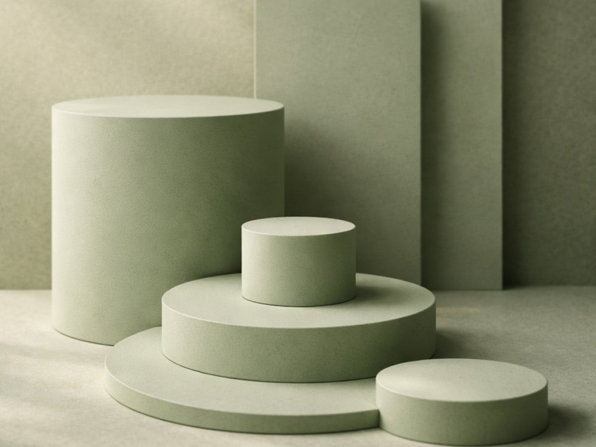
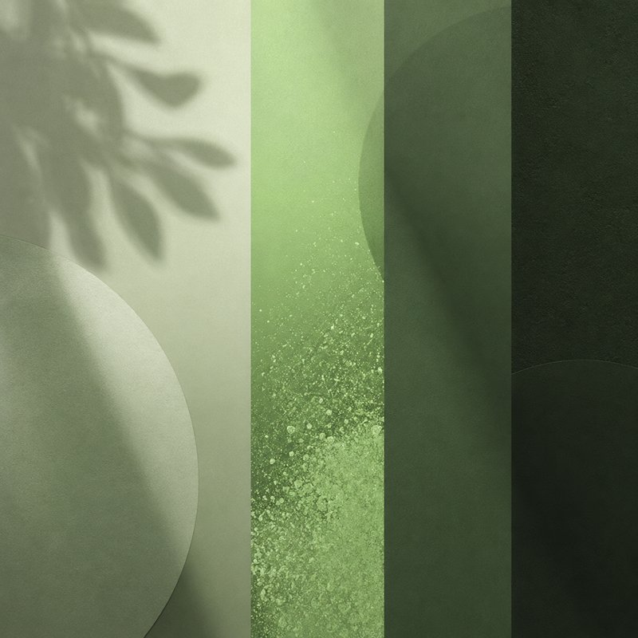
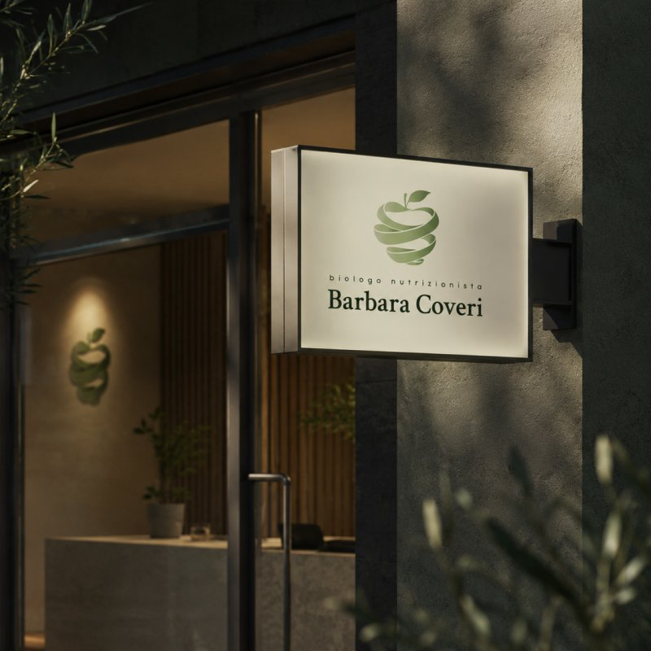
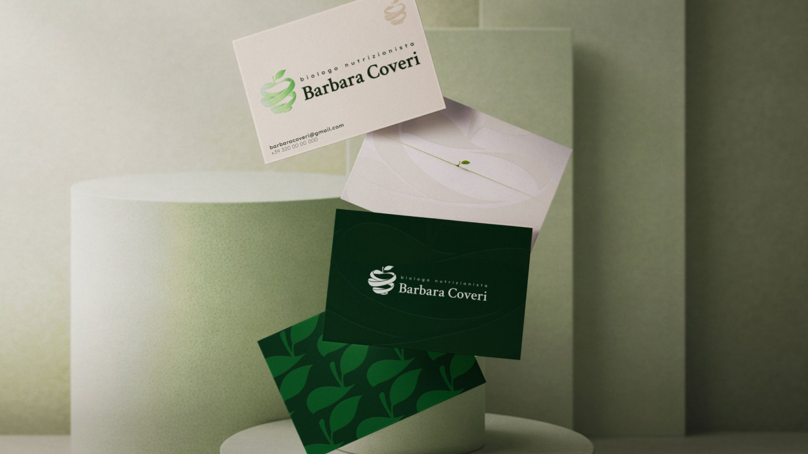

Barbara Coveri
Logo design e brand identity — Biologa nutrizionista

Un studio che apre, un'identità che accompagna.
Barbara è una biologa nutrizionista di Cesena che stava aprendo il suo studio. Non aveva ancora un'identità visiva — aveva un approccio. Il suo modo di lavorare, fatto di ascolto, relazione e accompagnamento nel tempo, era già chiaro e definito.
Il compito era tradurlo in un segno che funzionasse ovunque: sull'insegna, sul sito, sui social.
"La nutrizione come prendersi cura di sé. Non schemi imposti — un percorso equilibrato e sostenibile nel tempo."


Il segno è una mela — simbolo iconico della nutrizione — ma reinterpretata attraverso il movimento. La forma nasce dal nastro di una ginnasta ritmica: una curva continua che avvolge senza stringere.
Non un simbolo di controllo o rigore, ma di equilibrio in movimento. Un segno che poteva fare solo questo lavoro, per questa cliente.
La palette lavora sui toni del verde, con accenti beige, senape e lilla — naturale senza essere banalmente organico. La tipografia affianca Crimson Text, serif classico che porta spessore culturale e autorevolezza medica, a Lexend Exa, sans-serif neutro e tecnico che garantisce leggibilità e contemporaneità. Due voci che si completano senza sovrapporsi.




